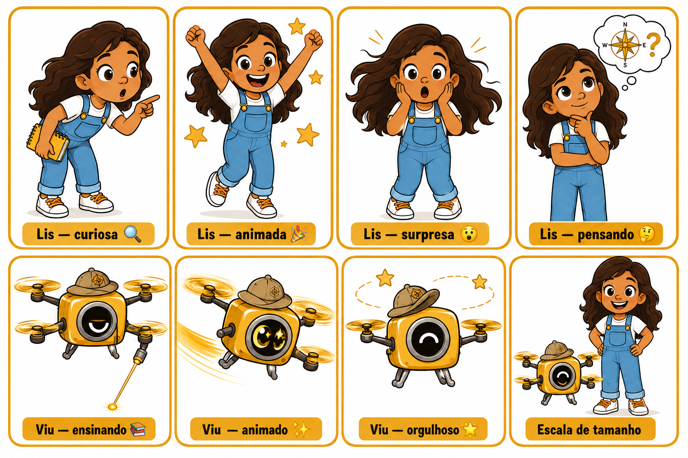
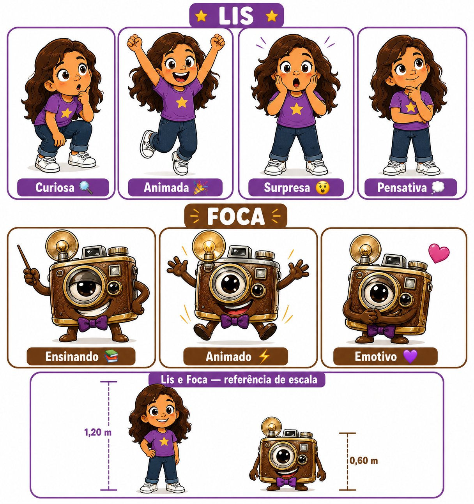
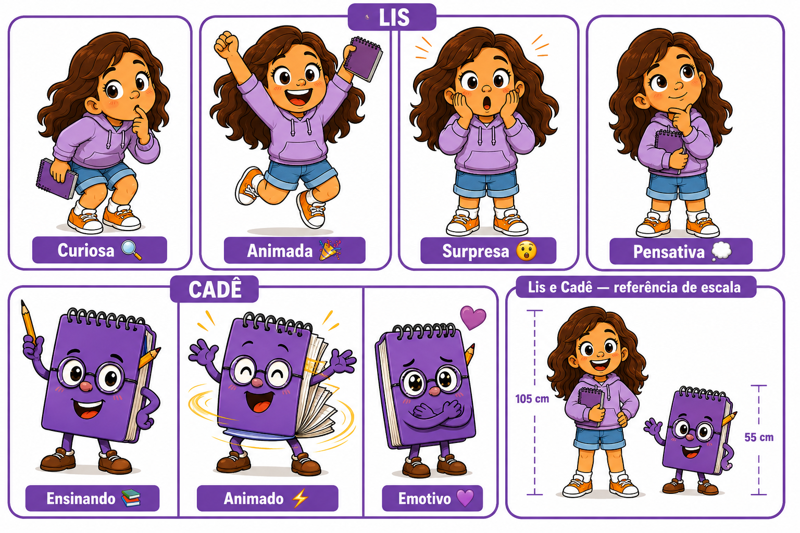
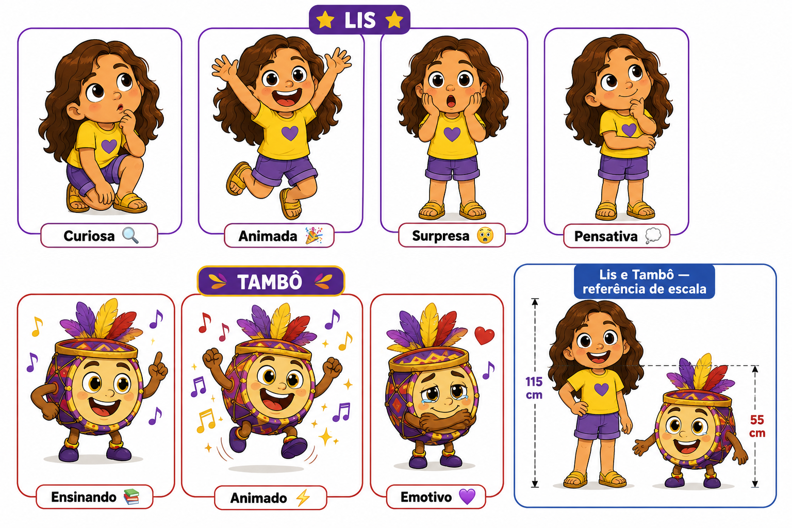
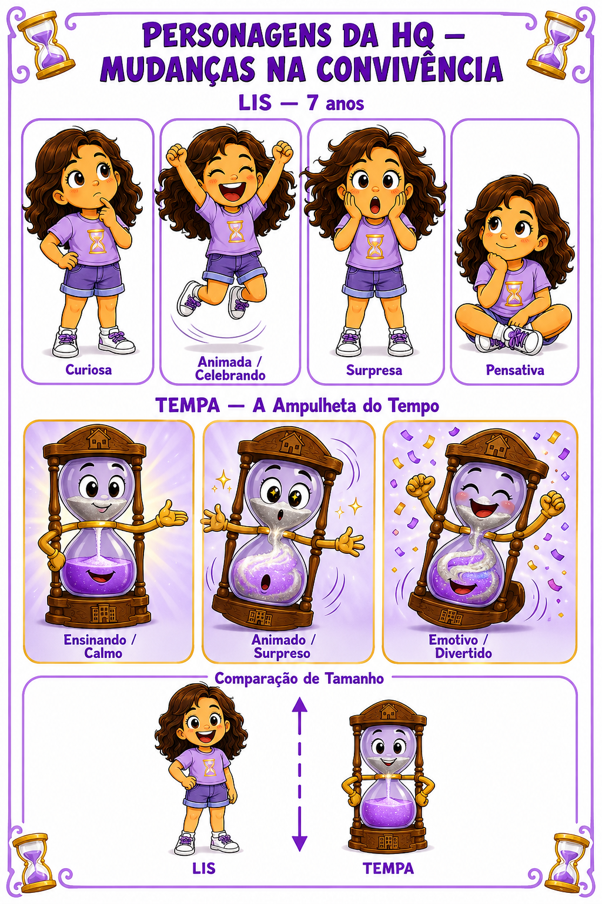

LIS — Protagonista (canônica)
versao canonica lis.png

VIU — Geografia · Representar os Lugares
geografia/representar-lugares/hq-representar-lugares-chars.png

FOCA — História · Memórias dos Lugares
historia/memorias-lugares/hq-memorias-lugares-chars.png

CADÊ — História · Meu Lugar de Viver
historia/meu-lugar-viver/hq-meu-lugar-viver-chars.png

TAMBÔ — História · Convivência entre as Pessoas
historia/convivencia-pessoas/hq-convivencia-pessoas-chars.png

COMBI — História · Regras de Convivência
historia/regras-convivencia/hq-regras-convivencia-chars.png
TEMPA — História · Mudanças na Convivência
historia/mudancas-convivencia/hq-mudancas-convivencia-chars.png
